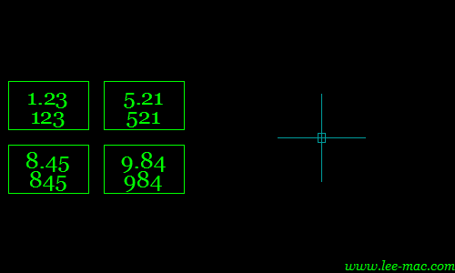

Sum Attribute Values
This page is delivered for consistency purposes only, as part of the LeeMac sample module of DynALisp, which shows how DynALisp turns existing AutoLISP programs into a module. The program and its description are the work of Lee Mac, who keeps all the credit for them. The original page, with the latest version, is on Lee Mac's website: https://lee-mac.com/sumattributes.html
| Function Syntax | LM-SumAttributeValues – original syntax: attsum (see aliases) |
| Current Version | 1.1 |
| Compatible with AutoCAD for Mac? | No |
| Compatible with AutoCAD LT? | Yes |
| Original Page | lee-mac.com/sumattributes.html |
Program Description
This program allows the user to sum numerical attribute values held by a selection of block references, with the results displayed in an AutoCAD table.
Upon issuing the command syntax attsum at the AutoCAD command-line, the user is first prompted to make a selection of attributed blocks to process. This selection may include standard or dynamic attributed block references.
Following a valid response, the program will iterate over the selection and will sum all numerical attribute values, grouping the values by common attribute tags.
If multiple attribute tags hold numerical values, the user is presented with a dialog interface and prompted to select which attribute tags should be displayed in the resulting table, before being prompted to specify an insertion point for the table.
The program will then automatically construct an AutoCAD table with properties inherited from the active Table Style. Each row of the table will display an attribute tag alongside the total of all numerical values held by that tag in the selection.
If the program is configured to use field expressions in the table, the various totals will be automatically updated following valid modifications to the attribute values referenced by the fields. Note that this does not include the addition of new attributed blocks to the drawing, or the removal of attributed blocks referenced by the table fields.
If field expressions are used, the formatting of the results will be dependent on the field formatting code set in the program; otherwise, the formatting of the totals displayed in the table will be dependent on the current unit & precision settings (that is, the values held by the LUNITS & LUPREC system variables respectively).
Note that this program may only be run in AutoCAD versions which support a Table Object.
Demonstration

Field Formatting
The field formatting code indicated at the top of the program source code (line 80) may be altered to display the attribute totals in a desired format:
;; Field formatting fmt "%lu6"
To determine the correct formatting code to be used, perform the following steps:
- Type FIELD at the AutoCAD command-line and press ENTER to open the Field dialog.
- Select Objects from the 'Field Category' drop-down menu.
- Select Formula from the 'Field Names' section.
- Right-click in the Formula panel, and click Insert Field.
- Select Objects from the 'Field Category' drop-down menu.
- Select Object from the 'Field Names' section.
- Select an attributed block (with attributes containing numerical values) from the drawing by clicking the object selection button adjacent to the 'Object Type' box.
- Select the appropriate attribute tag from the 'Property' panel, set the Format to (none) and click OK.
- Click the Evaluate button beneath the Formula panel.
- Configure the formatting options as desired.
- Click OK and pick a point in the drawing to create a temporary MText Field.
- Download & load my Field Formatting Code program.
- Type fieldformat to run the program and select the temporary MText Field created earlier.
- Following a valid selection, the field formatting code will be printed to the command-line, e.g.:
- Copy the formatting code (including the quotation marks) to the program source code where noted:
- Save and load the modified program file.
Formatting code: "%lu4%ds44%th39"
;; Field formatting fmt "%lu6"
Bundled program notes
;;---------------------=={ Sum Attribute Values }==---------------------;;
;; ;;
;; This program allows the user to sum numerical attribute values ;;
;; held by a selection of block references, with the results displayed ;;
;; in an AutoCAD table. ;;
;; ;;
;; Upon issuing the command syntax 'attsum' at the AutoCAD ;;
;; command-line, the user is first prompted to make a selection of ;;
;; attributed blocks to process. This selection may include standard ;;
;; or dynamic attributed block references. ;;
;; ;;
;; Following a valid response, the program will iterate over the ;;
;; selection and will sum all numerical attribute values, grouping the ;;
;; values by common attribute tags. ;;
;; ;;
;; If multiple attribute tags hold numerical values, the user is ;;
;; presented with a dialog interface and prompted to select which ;;
;; attribute tags should be displayed in the resulting table, before ;;
;; being prompted to specify an insertion point for the table. ;;
;; ;;
;; The program will then automatically construct an AutoCAD table ;;
;; with properties inherited from the active Table Style. Each row ;;
;; of the table will display an attribute tag alongside the total of ;;
;; all numerical values held by that tag in the selection. ;;
;; ;;
;; If the program is configured to use field expressions in the table, ;;
;; the various totals will be automatically updated following valid ;;
;; modifications to the attribute values referenced by the fields. ;;
;; Note that this does not include the addition of new attributed ;;
;; blocks to the drawing, or the removal of attributed blocks ;;
;; referenced by the table fields. ;;
;; ;;
;; If field expressions are used, the formatting of the results will ;;
;; be dependent on the field formatting code set in the program; ;;
;; otherwise, the formatting of the totals displayed in the table ;;
;; will be dependent on the current unit & precision settings ;;
;; (that is, the values held by the LUNITS & LUPREC system variables ;;
;; respectively). ;;
;;----------------------------------------------------------------------;;
;; Author: Lee Mac, Copyright © 2011 - www.lee-mac.com ;;
;;----------------------------------------------------------------------;;
;; Version 1.0 - 2011-01-10 ;;
;; ;;
;; - First release. ;;
;;----------------------------------------------------------------------;;
;; Version 1.1 - 2015-12-21 ;;
;; ;;
;; - Program entirely rewritten. ;;
;; - User may choose which attribute tags to display in table. ;;
;; - Numerical values of constant attributes now included. ;;
;; - Fields may be used to link attribute values to table. ;;
;;----------------------------------------------------------------------;;
Command Names And Aliases
As in every DynALisp module, each program of this sample module has one main command, named LM-*, and the original command names of Lee Mac's page are kept as its aliases: they run the same command, and can be added, renamed or removed in Dyl-Suite (saved in Resources\Aliases.csv).
| Command | Aliases | Name |
|---|---|---|
| LM-SumAttributeValues | ATTSUM | Sum Attribute Values |